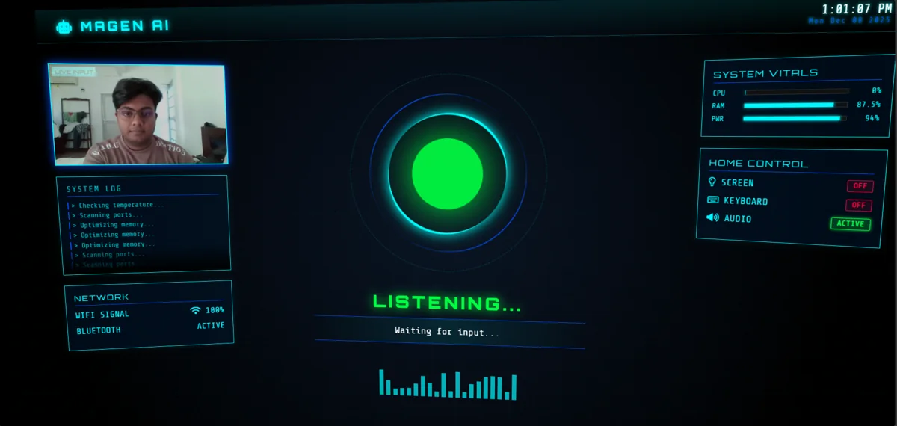
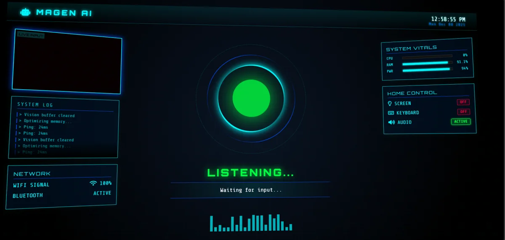

03 / Desktop automation · Computer vision
MAGEN.
A voice-driven Windows assistant connecting conversation, camera input, and practical desktop controls.
- Status
- Local desktop prototype
- Context
- Multimodal assistant
- Technology
- Python · Flask · Gemini · OpenCV · Windows APIs

01 / OVERVIEW
The problem
A conversational assistant becomes more useful when it can act on the computer around it and respond to visual context, rather than only return text.
The approach
MAGEN routes spoken commands to Windows controls or a Gemini conversation. A Flask interface exposes camera streaming, assistant status, and system telemetry. Separate modules handle speech, vision, memory, and device interactions.
My contribution
Built and integrated the assistant, its voice and vision modules, Windows controls, and web dashboard.
02 / SYSTEM FLOW
How it connects
- 01Voice / camera
- 02Command routing
- 03Gemini or Windows control
- 04Speech + Flask dashboard
A simplified overview of the implementation.
03 / ENGINEERING
Inside the implementation
- Voice-command routing and conversational responses.
- Camera capture and image-based prompts.
- Volume and screen-brightness controls through Windows integrations.
- Local memory and a dashboard for CPU, memory, and assistant status.
The engineering consideration
The voice loop runs alongside the Flask interface. Windows audio control also needs COM initialization in the worker thread, a concrete integration detail handled in the source.

04 / SCOPE & STATUS
What this work demonstrates
Requires Windows, local dependencies, and a configured Gemini API key. Some commands open system settings rather than directly change connectivity. No autonomous smart-home deployment is claimed.